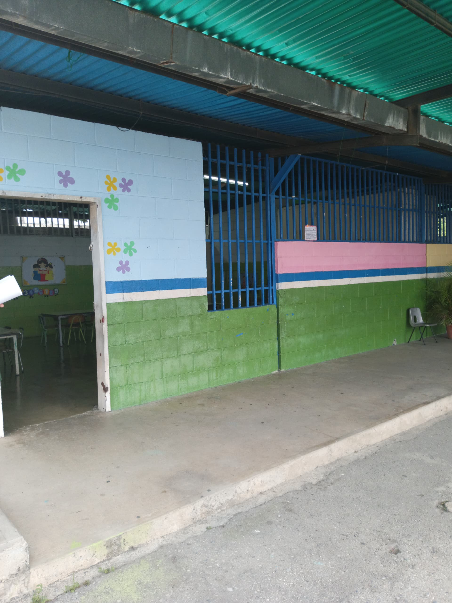

Historia
Inicialmente conocido como Casa Comunal San Antonio,
el C.E.I Mi Papagayo Volador fue creado con el objetivo
de brindar atención integral a los niños y niñas en edad
preescolar. Este centro educativo surgió de la necesidad
de ofrecer un espacio seguro y educativo para los más pequeños de la comunidad,
asegurando que recibieran no solo conocimientos académicos, sino también valores
y principios que les sirvieran de guía a lo largo de sus vidas.
Desde sus inicios, el C.E.I Mi Papagayo Volador ha
estado comprometido con la excelencia en la educación.
A medida que pasó el tiempo, se adaptó a las nuevas
demandas educativas y sociales, incorporando metodologías
pedagógicas innovadoras que buscan no solo la transmisión de
conocimientos, sino también el desarrollo integral del niño.
Se ha destacado por su enfoque centrado en el niño, valorando
cada etapa de su crecimiento y buscando siempre proporcionar un ambiente que
fomente el aprendizaje a través del juego y la exploración.
Además, la institución ha sido un lugar de encuentro para la comunidad,
organizando eventos y actividades que promueven la participación activa de las familias. Estos eventos no solo fortalecen
los lazos entre la escuela y los padres, sino también permiten que los niños vean la educación como una extensión natural de su vida
diaria. A lo largo de los años, muchas generaciones de niños han pasado por sus aulas, cada una dejando su huella y contribuyendo al legado
de esta institución.
La historia del C.E.I Mi Papagayo Volador también
está marcada por la dedicación y el esfuerzo de su
personal docente y administrativo. Estos profesionales han trabajado
incansablemente para crear un entorno que no solo es educativo, sino también
acogedor y seguro. Gracias a su dedicación, la escuela ha podido mantener altos estándares
educativos y ofrecer a los niños una base sólida para su futuro académico y personal.
Ubicación e Instalaciones
El C.E.I Mi Papagayo Volador se encuentra ubicado en la calle 37 y 38 con carrera 13,
código postal 3001, en la ciudad de Barquisimeto. Su ubicación central hace que sea f
ácilmente accesible para muchas familias de la zona, lo que ha contribuido a su popularidad y relevancia dentro de la comunidad.
Las instalaciones del centro están diseñadas pensando en el bienestar y la seguridad de los niños.
Las aulas están equipadas con materiales didácticos modernos que facilitan el aprendizaje y fomentan
la creatividad. Además, el centro cuenta con un amplio patio de recreo, donde los niños pueden jugar
y desarrollar sus habilidades motoras en un entorno seguro. Este patio está diseñado para permitir que
los niños se muevan libremente y exploren, lo cual es esencial para su desarrollo físico y emocional.
Otra de las instalaciones destacadas del C.E.I Mi Papagayo Volador es la cancha múltiple "Edic la 37".
Este espacio no solo es utilizado para actividades deportivas, sino también para eventos comunitarios y
escolares, promoviendo así un sentido de pertenencia y comunidad entre los niños y sus familias. La cancha
está equipada con todas las medidas de seguridad necesarias para garantizar que los niños puedan disfrutarde las actividades físicas sin riesgo.
Impacto en la Comunidad
El C.E.I Mi Papagayo Volador cumple
un rol fundamental en la comunidad, siendo
un referente en la educación preescolar en la
región. Su enfoque no solo está en la educación formal,
sino también en la formación de ciudadanos responsables y
comprometidos con su entorno. Los niños que asisten a esta institución
no solo aprenden habilidades académicas, sino también valores fundamentales como el
respeto, la responsabilidad, la solidaridad y la empatía.
A lo largo de los años, el centro ha trabajado estrechamente
con las familias para asegurar que los niños reciban un apoyo
integral en su desarrollo. Esta colaboración ha sido esencial para
crear un ambiente educativo que va más allá del aula, involucrando
a las familias en el proceso educativo y fomentando una comunidad educativa unida.
El impacto del C.E.I Mi Papagayo Volador en la comunidad también se
refleja en su capacidad para adaptarse a las necesidades cambiantes de la
sociedad. Ha implementado programas y proyectos que responden a las demandas
actuales, como la inclusión de nuevas tecnologías en el aula y la promoción
de prácticas sostenibles y respetuosas con el medio ambiente.
Además, el centro ha sido un espacio para la innovación y la experimentación pedagógica,
siempre buscando nuevas maneras de mejorar la calidad educativa y el bienestar de los niños.
Esta constante búsqueda de la excelencia ha permitido que el C.E.I Mi Papagayo Volador se mantenga
como un líder en educación inicial, no solo en la comunidad local, sino también a nivel regional.